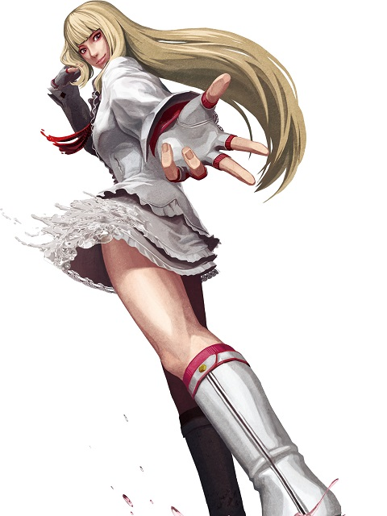
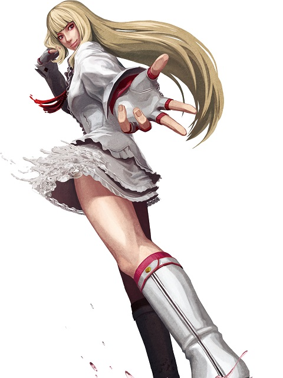

Story
Lili, the only daughter of a wealthy oil magnate in Monaco. Four years ago, she was captured and held ransom for that very reason. While in captivity, she struggled violently to free herself, taking out one of her captors. That fight triggered her hunger for battle. However, Lili's father was a good-hearted man who hated conflict. "I don't want Father to be upset with me...but I also want to fight." Lili could no longer control her urge to fight. Under the guise of a simple vacation, she used the family's private jet to take part in street fighting tournaments around the world. One day, she receives an invitation to a certain fighting tournament from an opponent she defeated in San Francisco. Lili soon realizes that the host of this tournament was none other than the Mishima Zaibatsu, the main source of her father's problems. She decides to enter the tournament and put an end to her father's business troubles.
Lili entered The King of Iron Fist Tournament 5 without her father's knowledge, and was beaten by Asuka Kazama. To add insult to injury, her father soon discovered that Lili had entered the tournament. Forbidden from leaving home, Lili was unable to take revenge on Asuka. It was then that her father's oil fields were taken over by the Mishima Zaibatsu. The company fell into disarray, and Lili's father collapsed due to stress. Lili was concerned for her father's well being. She figured that if she could get back his oil fields, she would be able to relieve her father's anxiety. While she was formulating her plans, the Mishima Zaibatsu announced The King of Iron Fist Tournament 6. Unable to pass up such an opportunity, Lili enters the tournament in order to help her father.
Lili entered the King of Iron Fist Tournament again without telling her father this time either. There she was anyway, smiling as the rapturous crowd looked on and her opponent entered the arena. Lili was set to fight Asuka Kazama, someone she had personally considered her greatest rival for many years. If Lili saw the look of annoyance on Asuka's face, it didn't show; she just walked elegantly to the center of the ring like she owned it, all the while thanking Lady Luck for the opportunity to fight her rival.

 
